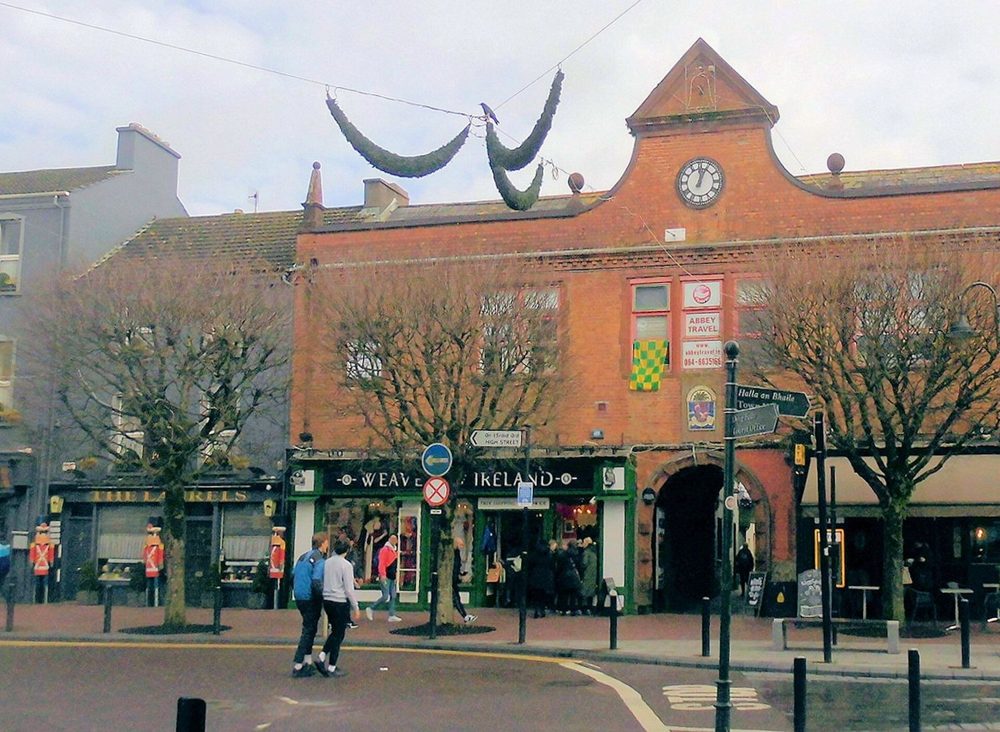
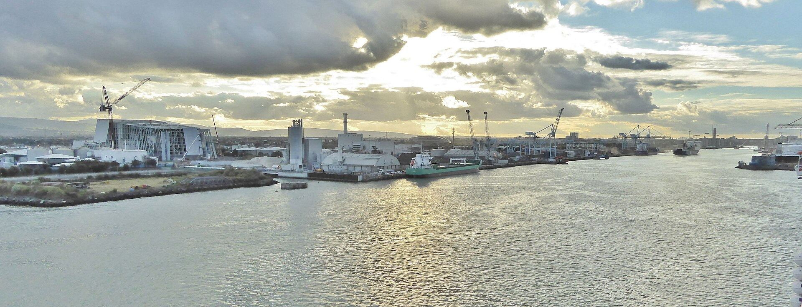
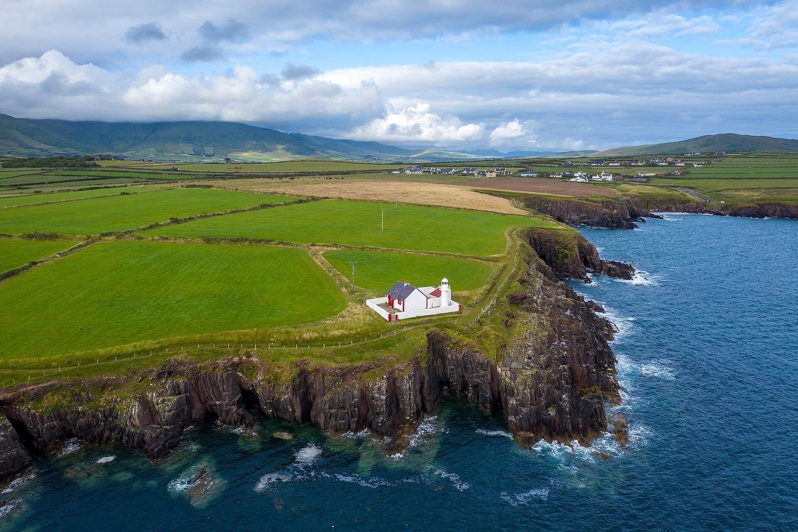

Практика
Планирование поездки
Ирландия невелика — её можно пересечь за четыре часа, — поэтому главная сложность не в расстояниях, а в выборе. Вот что действительно важно.

Плохой погоды не бывает — бывает неподходящая одежда.
ирландская поговорка, произносимая бодро
Когда ехать
Лучшие месяцы — май, июнь и сентябрь: в июне светло почти до одиннадцати вечера, дороги ещё сносные, а погода наименее враждебна. Июль и август теплее, но и самые загруженные: жильё на западном побережье стоит бронировать за месяцы.
Зима действительно тихая — некоторые прибрежные местечки закрываются полностью, — но именно тогда Ирландия самая атмосферная: пустые пляжи, открытый огонь и свет на горах. Дождь возможен в любой месяц. Атлантика держит мягкую температуру: редко ниже нуля и редко выше 20 °C.
Если вы едете ради события, планируйте от него: Голуэйский фестиваль искусств в июле, всеирландские финалы в сентябре или зимнее солнцестояние в Ньюгрейндже, места на которое разыгрывают в лотерею каждый сентябрь.
Как передвигаться
За пределами Дублина и Белфаста нужна машина. Автобусы доходят почти всюду, но часто раз в день, а интересные места обычно в нескольких километрах от маршрута. Движение левостороннее, дороги узкие, а ограничение скорости на сельских дорогах выше, чем кажется.
Железная дорога удобна, но ограничена: линии расходятся из Дублина в Корк, Голуэй, Лимерик, Уотерфорд, Слайго и Белфаст, и ни одна не пересекает западное побережье с севера на юг. «Дикий атлантический путь» длиной 2500 километров от Донегола до Корка — та поездка, ради которой страна и построена.
В городах ходите пешком. Дублин, Голуэй, Корк и Килкенни компактны, а центр Голуэя пересекается за пятнадцать минут.

Где жить
B&B — классический ирландский способ путешествия: комната в семейном доме, горячий завтрак и хозяин, который скажет, по какой дороге ехать. Уровень разный, а лучшие места бронируются заранее.
Дома с самостоятельным питанием подходят семьям и всем, кто едет больше чем на три ночи: запад и юго-запад полны таких вариантов. Отели сосредоточены в городах и крупных посёлках, а загородный дом-отель — настоящая ирландская особенность: георгианский или викторианский дом с парком, работающий как гостиница.
Хостелы дешёвы, общительны и есть везде на пеших маршрутах. Если идёте Уиклоу-Уэй или Керри-Уэй, бронируйте всю цепочку хостелов сразу: на узком маршруте мест мало.

Реалистичная неделя
Дни 1–2, Дублин: Тринити и Келлская книга, Дублинский замок, прогулка вдоль Лиффи до Таможни, вечер в Темпл-Бар и полдня в тюрьме Килмейнхем.
День 3, Глендалох и горы Уиклоу: монастырь утром, перевал Салли-Гап и озеро Тей днём, затем на запад в Голуэй. Дни 4–5, Голуэй и Коннемара: город и Кладда, затем аббатство Кайлмор, долина Ина и ночь в гэлтахтской деревне.
Дни 6–7, Клэр и Керри: Скалы Мохер и Бёррен по дороге на юг, затем Килларни, Макросс и Кольцо Керри. Если есть ещё день, добавьте Дингл и Слеа-Хед — это лучшая короткая поездка в стране.

Выберите два региона, а не пять. Увидите больше.